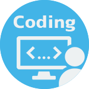

SKILL

HTML5/CSS3
実務歴４年
基礎的なコーディング、またレスポンシブを考慮したコーディングも可能です。 １ページを作り上げることも、既存ページの修正も実務にて多数経験しております。
WordPress
実務歴2年
SEOに特化したWEPページを制作実績が多数あります。
Bootstrap5を使用したWebページや独自のテーマでのコーディング、PHPを使用したテーマのカスタムなど。
その他、WordPressのセットアップやContact Form 7やMW WP Formのメールフォームのカスタムなど。
Saas
実務歴2年
Bootstrap5を使用したWebページの作成の際に使用。_variableなどの各種変数の設定も実務経験があります。
Bootstrap５
実務歴2年
実務にて多数ページを制作。row、colを使用したレスポンシブを考慮したコーディングが可能。
PHP
実務歴2年
実務にてWordPressのテーマを独自に編集する際、ヘッダー、フッターの編集をする際に使用。
JavaScript
実務歴2年
実務にてフォームの入力チェックや自動入力などページに動的な機能を持たせる際に使用。

Figma
実務歴2年
Figmaでカンプのデザインが行えます。
実務にてカンプの作成や既存のカンプの修正などに使用。
また、UIキットを使用して、Bootstrap5に対応したデザインも可能です。

Adobe XD
実務歴2年
Adobe XDでカンプのデザインが行えます。
実務にてカンプの作成や既存のカンプの修正などに使用。

Adobe Photoshop
実務歴10年
前職のWEB制作会社では、Photoshopを使って主にバナー制作や画像加工を行なっておりました。 グラッフィクデザインの際にも画像加工・レタッチなどを行なっておりました、特に切り抜きが得意です。

Adobe Illustrator
実務歴10年
エンタメ・音楽系イベントのフライヤーやウェディングのDMやアルバム作成などジャンルを問わず制作可能です。
学生時代からフリーランスとしてクライアントのデザインを制作した実績があります。

SEO
実務歴2年
SEOに特化したWEB制作会社での経験を活かし、SEOを考慮した構成やデザインからコーディングが可能です。
自分で制作や構成を考えた多くのページが上位表示になった実績があります。
GRC、Google Search ConsoleやGoogle Analyticsを使用。

取得資格
ITパスポート試験 取得（平成30年7月）
普通自動車第一種運転免許 取得（令和 2 年 1 月）
ウェブデザイン技能士3級 取得（令和 4 年9月）
ABOUT
職務経歴
システムインテグレーターの企業の総務部で4年間ほど勤務した後、職業訓練校を経て2024年7月までWeb制作会社に2年間ほど勤務しておりました。
Web制作会社 WordPressを中心にSEOに特化したWebサイトを制作（コーディング・デザイン・SEO）やプロジェクト進行管理やクライアントとのヒアリングや見積もり作成など
業務内容
コーディング（HTML/CSSやSass、Bootstrap5）、ヘッダーやフッダー設定（PHP）、WordPressのテーマの設定（PHP）、メールフォームの制御やアコーディオンなど動的なサイトの制作（JavaScript）
UI/UXデザイン（Figma、Adobe XD）、バナー、ファビコンデザイン（Adobe Photoshop）
WordPress投稿画面の要件定義・設計、WordPressセットアップ、メールフォームの設定とカスタム（Contact Form 7、MW WP Form）
サーバー移管（GMOサーバーからXサーバー）、メールアドレス取得とメール設定
SEOを考慮したデザイン構成や文章を作成、順位変動分析（GRC、Google Search Console、Google Analyticsを使用）、Google Business Mapの制作
クライアントとのヒアリング（デザイン・サイト制作や修正要件など）、見積もり作成
チーム内プロジェクト進行管理、OJTによる教育など
システムインテグレーター 総務部 事務職と並行して社内HPのページ制作と修正、新入社員教育リーダーや学生向け企業説明など幅広く業務を任せていただき担当しておりました。
業務内容
伝票作成、電話応対、接客対応、プライバシマーク更新作業など
新入社員の教育（Excel、Word）、インターンシップの担当、学生向け企業説明会のプレゼンテーションなど
今後の展望と過去の経験
私は人とコミュニケーションを取りながら仕事を進めることが、業務を円滑に進める上で重要だと考えています。サイトを制作するだけではなく、プロジェクト内のメンバーやクライアントとの思いが汲み取れるようなWebデザイナーを心がけています。
なぜなら現場での経験からコミュニケーション不足による「自分の考えやイメージの共有不足」がプロジェクトの進行に影響を与えると痛感し、コミュニケーションを重視して業務に取り組んできました。
そのため前職では接客や教育の能力が評価されて、入社1年目からサイト制作業務に加え、クライアントとのサイト制作のヒアリングや見積もり作成、チーム内のディレクション業務などを任せていただきました。
双方の考えを事前にしっかりと共有することでクライアントとの完成イメージのギャップを埋めることができ、結果的に修正を減らすことができました。
クライアントとの対応では、お客様の要望に対してどのようなものがご提供できるか、どのようなものを望んでるか、こちらの説明が相手に理解しやすいかを考えて対応することで、お客様が制作サイトやページをどういった意図で制作したいか、 イメージなどをより掴むことができます。お客様のそのような情報があると、SEOの文章作成や構成などイメージしやすいためそれをチームメンバーに共有して一人一人が考えながら制作できるようにしました。
また、チーム内ディレクションでは説明などはメンバーが理解しやすいように工夫し、個々がどのようなスキルを持って、タスクがどれだけあるか、その人にとってタスクの難易度はどれくらいかなどを常にチームメンバーと確認してタスクを振り分ける作業や制作物のチェックなどを行なっていました。
抱えてるプロジェクトが多く、時間がない中の業務だったため、プロジェクトを終わらせることと教育（OJT）を常に天秤に掛けて考えておりました。
OJTでの教育方針は、自分の仕事のやり方と同じで、できる事を少しずつ増やすのを目標にしております。 特に、前職は教育の時間が限られていましたので、本人の能力と同等か、自力で解決できそうな難易度のタスクをこなしていただき、自信と実力を確実に付けて、数回でそのタスクは一人でできるようにして任せられるタスクを増やしていきました。
まずは、コーディング・デザイン・SEOの基礎を一通り教えた後は、得意な分野のタスクを多く、苦手な分野のタスクは私がフォローしながら少しずつ進めました。
全ての分野で一人前になるのが理想ですが向き不向きがあり短時間では難しいため、得意な分野を伸ばして、苦手な分野は平均的なスキルになるようにタスクを振りました。
この流れを行う事で最終的に得意分野は完全に任せることができ、苦手の分野も難易度は高くても自分一人で解決できるようになるからです。
自己紹介
昔から絵を描くことが大好きで、大学ではデザインを専攻しました。
今でも自分の手で何かを作ることが好きで、プライベートでは絵などの平面だけでなく立体物の制作にも挑戦しています。
最近は、自分でドレスを裁縫したり、オリジナルのデザインのTシャツを制作しました。
また思い立ったら何でも行動してしまう性格で、洋画が好きすぎて英語や中国語が話せない状態で台湾やイギリスの映画イベントに参加し、現地の映画ファンと交流したという経験があります。
その出来事をきっかけに、もっと多くの人と交流したいと思い、現在は英語を勉強中です。
オンライン英会話を初めて2年間継続しており、実力を感じ始めたため今年3月にTOEICを受験予定です。
趣味
映画鑑賞（主に洋画）、音楽鑑賞（クラシックロックや古い音楽が好き）、ものづくり、絵を描くこと、英会話、ファッション
最近では、映画や音楽やファッションから得たものを、自分の作品にアウトプットすることが多いです。
CONTACT
お問い合わせは、
履歴書に記載したメールかお電話にてお願いいたします。
勤務条件は貴社の規定に従います。
お電話に出られない場合は、留守番電話に伝言いただければ、折り返しご連絡いたします。